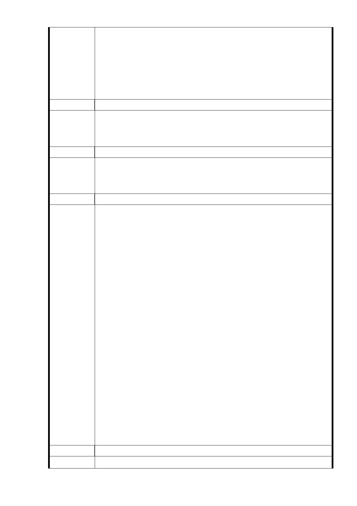

進行都市計畫變更，是否合法？萬一屆時市府敗訴，怎麼
處裡？
（2）廣慈 BOT 案當初規劃的上限是 225%，現在市府為了蓋公
營住宅就可以將容積調高為 400%！如果廣慈可以調高容
積，大仁里的住宅也應調整容積。
（3） 市府要為大仁里辦廣慈興建公營住宅說明會。
發 言 人 松隆里里長黃俊龍
（1）福德街寬度 25 米與福德街 84 巷 12 米，道路寬度不足，
建議辦法
社會住宅容積提高，是否會影響福德地區交通及學子就學
？
發 言 人 中坡里里長曾傳達
（1） 反對將社福用地由原容積 210％提升至 400％。
建 議 辦 法 （2） 有關廣慈開發案完成後日後肯定會移入大量人口，停車問
題請規劃單位須妥善處理。
發 言 人 陳孋輝議員
（1 ） 為 何 今 天廣 慈 開 發案 有 關 社福 用 地 容積 會 提 高？ 日 後 蓋
社會住宅有哪些人會進駐？市府要說清楚。
（2）市府準備蓋近 1500 戶的社會住宅、進駐 3000 人，屆時整
體園區停車空間要如何規畫？周邊居民的停車需求是否
也納入考量？
（3） 過 去 市 府認 為 廣 慈開 發 案 因周 邊 道 路及 公 共 設 施 服 務 水
準不佳，將社福用地的容積限縮至 210％。 現在週邊道路
及公共設施服務都沒有提昇，市府卻自行將容積調整到
400 % ，簡直是自相矛盾！
建 議 辦 法 （4）市府將原先社福用地由 210％提高至 400％目的就是要解
決低收入戶居住的問題。
（5） 過去市府要蓋公營住宅，都有在地方開說明會，為何這次
在大仁里要蓋公營住宅竟然沒開說明會！無異是藐視大
仁里里民。
（6）因廣慈周邊道路寬度不足，一塊社福用地容積由 210％變
400％蓋 1500 戶、住 3000 人；發生意外難以疏散人潮。
（7）反對本都市計畫變更案，將容積由原先 210％調高至 400 %
（8）建議大家擬兩份連署：一是維持目前社福用地容積 210%
；二是在短時間未開發前，請市府先闢建綠地供周邊居民
使用。
發 言 人 張茂楠議員
建 議 辦 法 （1）市府對社福用地將容積提高為 400％作公營住宅，屆時是
- 76 -